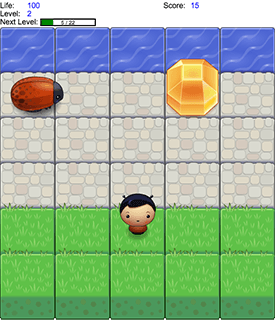

I love this project. I really liked creating the different objects in JavaScript and using them with HTML5 canvas. I had prior experience with Javascript, but this course really took things to the next level. In the past I read books and even took some online courses. The course that was delivered by Hack Reactor really solidified these concepts.
